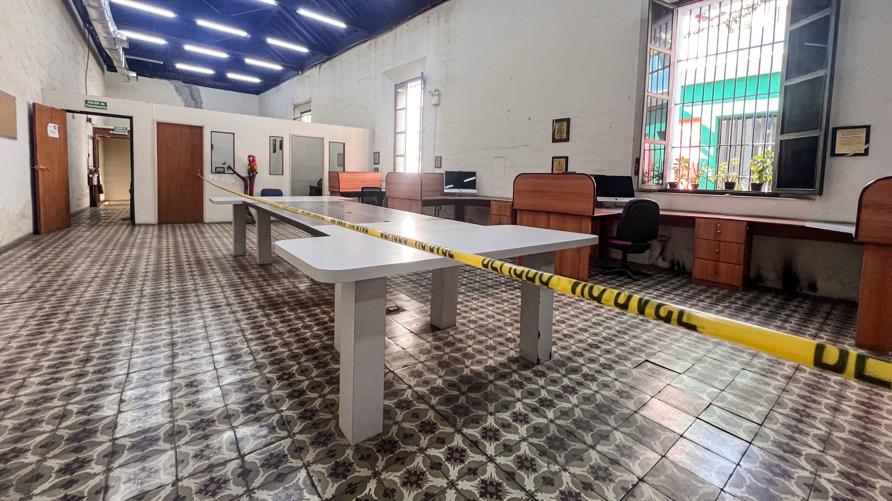
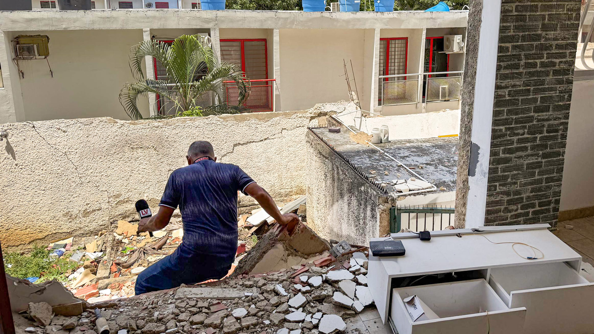
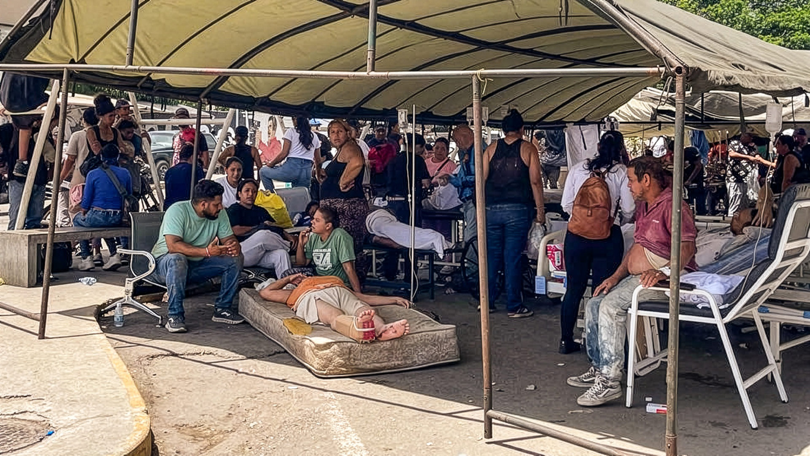
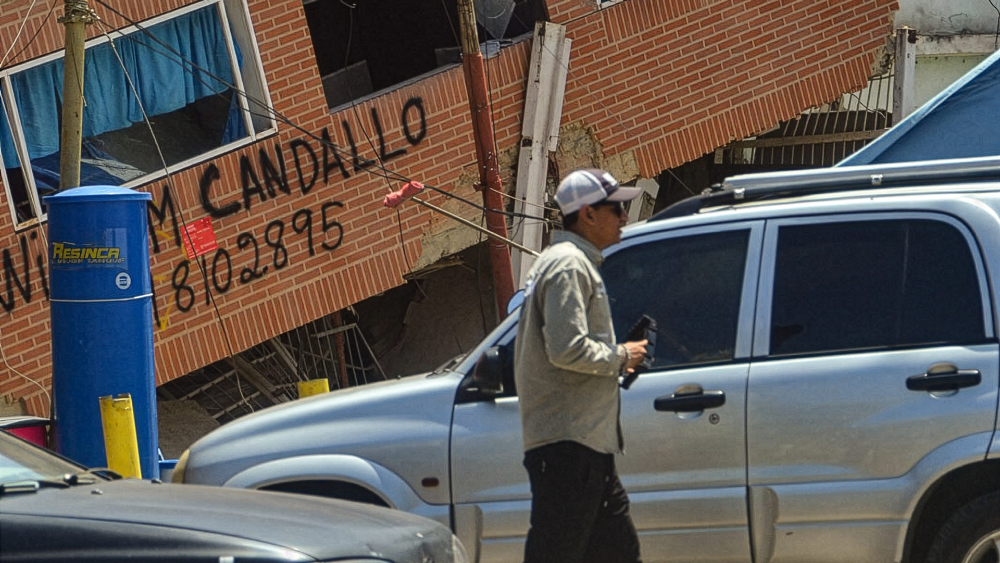
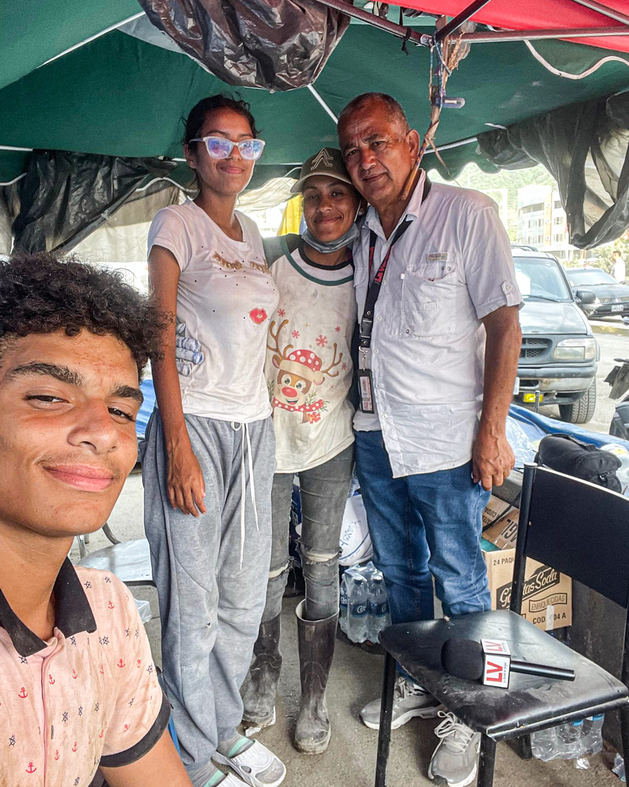
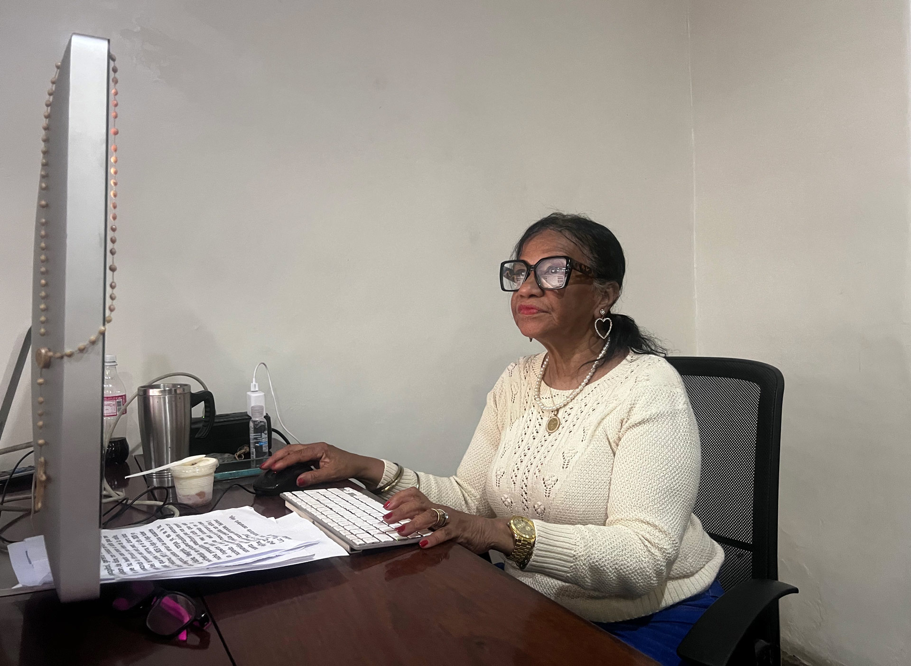
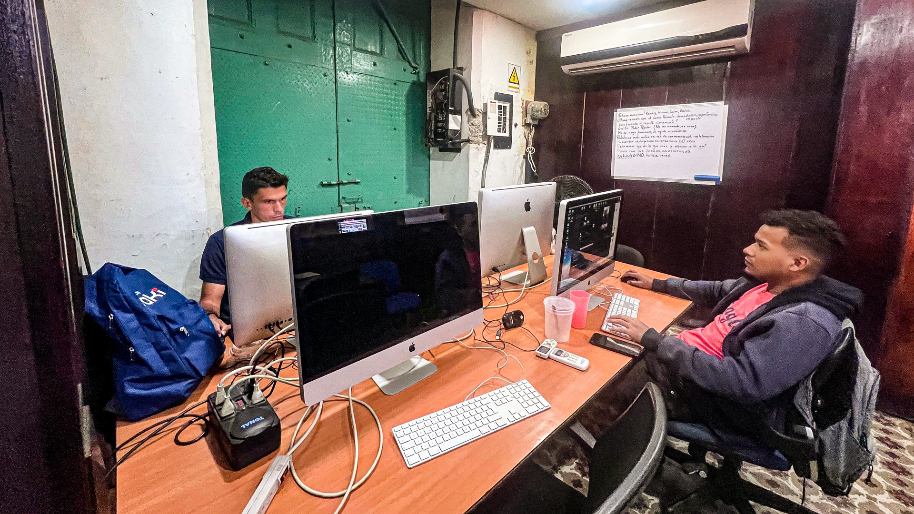

Historias — Vargas
La redacción no debía parar
El Diario La Verdad de Vargas se las arregló para ofrecer información de valor en los días posteriores a la vaguada que arrasó el entonces llamado estado Vargas en 1999. Casi tres décadas después, luego de los dos terremotos que devastaron principalmente a La Guaira, los reporteros volvieron a salir a las calles para hacer honor a aquel precepto de que el periodismo es un servicio público, sobre todo, en medio de una emergencia.

Beatriz Rodríguez, directora del Diario La Verdad de Vargas, y Rómulo Herrera, propietario de ese medio, suelen hablar todos los días muy temprano en la mañana. De política, de economía, de los temas en la agenda editorial de la redacción. Pero la del 25 de junio de 2026 no era una mañana como cualquier otra. Desde la tarde anterior —luego de los dos terremotos que estremecieron La Guaira—, todo era confusión, angustia, oscuridad. No había luz, no había conexión a internet, no funcionaban las operadoras telefónicas. Y solo circulaban noticias —muchos rumores— de que la devastación era descomunal.
Desde Estados Unidos, donde vive, Rómulo logró que le cayera la llamada:
—¡Me alegra saber que estás bien! —exclamó al otro lado del teléfono tan pronto oyó la voz de Beatriz.
—Desde anoche estoy en el estacionamiento del estadio César Nieves; estoy damnificada.
—Lo siento, Beatriz. He visto fotos y videos, y todo se ve horrible. Intenta comunicarte con el resto del equipo. Necesitamos saber cómo están, y si tienen disposición a trabajar. Debemos reportar lo que se pueda. Debemos seguir siendo un canal de información para el resto del país y el mundo.

No era necesario que él se lo dijera. Ella lo sabía. Durante esa larga madrugada no había dejado de reflexionar en cómo cubrir esta tragedia. En cómo aportar desde el periodismo; en cómo el periodismo puede ayudar a la gente. No había oficina a donde volver. Había quedado con muchas grietas; era mejor que la inspeccionara un experto antes de regresar. Pero Beatriz sabía que la redacción no podía parar.
Al colgar, comenzó a comunicarse con sus periodistas y reporteros gráficos. Con algunos pudo hablar, con otros no, porque las redes telefónicas no funcionaban, tampoco el internet. En algunas partes ni siquiera había electricidad.
Beatriz le pidió al periodista Luis López que cubriera las parroquias del oeste del estado (Catia La Mar y Urimare); mientras que los periodistas Rodolfo Ruiz y Gian Bonsignore, las del eje este (Macuto y Caraballeda). Debían registrar las necesidades de las personas; además de reportear sobre desaparecidos y las ayudas que estaban ofreciendo en centros de acopio, campamentos médicos y hospitales.
En realidad, varios de ellos ya habían comenzado su reportería desde el día anterior, solo que Beatriz no lo sabía. Instantes después de que la tierra se aquietó, Luis comenzó a hacer videos en el Paseo Macuto, y Rodolfo hizo lo propio en otros lados de La Guaira. No lo hicieron como una pauta, porque no lo era; sino guiados por el instinto periodístico. Una vez que estuvieron en una zona con señal, mandaron al equipo de redes sociales ese material que recabaron instantes después de los terremotos.

En los testimonios que recogían, Luis, Rodolfo y Gian se encontraron con un leimotiv: los ciudadanos clamaban que llegara maquinaria pesada y especialistas en rescate.
Escuchaban tantos relatos, tantas preocupaciones, tantas necesidades.
El equipo de redes sociales del diario cargaba los celulares y se conectaban a redes wifi de supermercados o panaderías que estaban operando con plantas eléctricas; mientras eso ocurría, Beatriz seguía llamando una y otra vez al resto de los periodistas, entre ellos, a Laura De Stefano.
Laura vive en una zona de Catia La Mar en la que el terremoto no fue devastador. Ella y su familia sintieron un movimiento leve, y escucharon un ruido, seguido de un escándalo a lo lejos. Laura, que es periodista de La Verdad de Vargas, pensó que al día siguiente le tocaría hacer una nota sobre la impresión de las personas ante ese leve sismo. Pero al poco tiempo, comenzaron a llegar los rumores.
—¡Playa Grande es un cementerio de escombros! —dijo un vecino.
Otros comentaban apreciaciones de ese tenor, que a ella, desde luego, le parecían exageraciones.
Durante la mañana del día siguiente, ya preocupada porque las versiones de la catástrofe no dejaban de llegarle, se dispuso a ir al centro de Catia La Mar. A ver, a constatar. No consiguió transporte, así que tuvo que caminar 5 kilómetros hasta la avenida El Ejército. Le sorprendió ver edificios que ya no existían, y un montón de heridos a las afueras de la Clínica Popular Doctor Alfredo Machado.
Caminó un poco más; tomó algunos testimonios, hizo fotos y videos.

Y pasada un par de horas, prefirió irse de nuevo a su casa: sabía que debía caminar un buen trecho, y no quería que se hiciera de noche estando en la calle, porque, además, todavía no había electricidad.
Ese día, no logró comunicarse con Beatriz. Y vaya que lo intentó.
Durante ese 26 de junio, Beatriz estuvo trabajando en el estacionamiento del estadio César Nieves. Logró comunicarse con el fotógrafo Antonio Domínguez, quien le dijo que había quedado damnificado; y también con el periodista Galvis Guzmán, quien vivía en la urbanización Playa Grande: le comentó que se había fracturado la tibia y el peroné al intentar salir del edificio con sus hijas y su esposa.
Ambos le informaron que estaban en Caracas. Beatriz supo que sería muy difícil que se reintegraran. Ese día, sin recursos para trabajar, con tantas dificultades alrededor, a Beatriz se le hizo inevitable mirar al pasado: se dio cuenta de que no era la primera vez que atravesaba por algo así. Por un momento sintió que estaba otra vez frente a un fantasma que nunca dejó de aparecer en La Guaira.

Rómulo Herrera fundó el Diario La Verdad en 1997. El 7 de octubre de ese año —con un equipo de 11 periodistas y bajo el lema “Tu verdad, nuestra verdad”—, circuló la primera edición. Ya habían ganado un espacio en el imaginario colectivo de La Guaira cuando, dos años después, atravesaron la primera crisis: el 15 de diciembre de 1999, una vaguada produjo otra tragedia en el estado.
En aquel entonces, el diario funcionaba en un edificio de la avenida Soublette. El agua de una quebrada adyacente dañó las computadoras, cámaras fotográficas y otros equipos.
El diario no paró. Periodistas y fotógrafos recorrieron las calles, y hacían lo mismo que ahora: reportear, prestar un servicio público en medio de una emergencia. Cuando terminaban el trabajo de campo, un jeep los llevaba hasta la sede del Diario Avance, en Los Teques, estado Miranda, redacción que los acogió: ahí redactaban, armaban el periódico, que, por la contingencia, comenzó a salir tres veces a la semana. La operatividad del diario se mantuvo así por seis meses, hasta que Rómulo decidió alquilar unas oficinas cerca de la Alcaldía del Municipio Vargas.
Pero ahora el daño parecía más grande.
Había menos periodistas (en 1999, eran unos 30 profesionales en diferentes fuentes; ahora si acaso llegaban a 15, contando al personal administrativo).
El 27 de junio de 2026 —ese día se celebra el Día del Periodista en Venezuela—, Luis comenzó el recorrido a las 9:00 de la mañana. A las 5:00 de la tarde aún andaba por Los Corales y se topó con una amiga, Amparo Del Giudice, quien estaba intentando hallar a su hijo bajo los escombros. La ayudaba su nieto.
—Luis, necesito que me ayudes.
—Claro. ¿Puedes grabar pidiendo ayuda? —le preguntó Luis.
—Se ha perdido mucho tiempo. El gobernador no da la cara y tampoco dice nada, solo llegan personas que toman unas fotos y se van. Es mi nieto quien con sus manos intenta hallar a su padre. Incluso, la franela que tengo puesta en este momento era de mi hijo y fue mi nieto quien la sacó bajo los escombros. Al pasar un helicóptero por la zona es que los funcionarios se ponen a trabajar y luego dejan de hacerlo, pero la realidad es otra. Aquí nadie hace nada. Necesito ayuda —dijo Amparo ante la cámara.
Luis siguió haciendo unas tomas del lugar mientras narraba lo que veía, pero Amparo volvió a pedirle hablar frente a la cámara:
—Solo han conseguido a dos personas muertas y una viva. Seguimos esperando la ayuda, por favor.
Más tarde, Luis supo que gracias a ese video comenzaron a comunicarse a los datos de contacto que suministró en sus videos. Y muchos le mandaron dinero a través de transferencias bancarias. Aunque el dinero estaba destinado a pagar el servicio de maquinaria que le ayudaba a hallar más rápido el cuerpo de su hijo, no fue posible: los operadores no aceptaban el pago porque estaban allí buscando a una persona en particular o un grupo familiar en específico.
Esto se repitió en diferentes lugares. Aún así Luis siguió tratando de visibilizar la necesidad de maquinaria para avanzar con los rescates.
El 28 de junio Beatriz llamó a Jenny Díaz, la correctora, para saber cómo estaba.
—Casi no tenemos periodistas; súmate a la reportería, puedes hacer videos informando de aquellos comercios que están operando. Así las personas sabrán a qué lugar ir en caso de que necesiten comprar alimentos o medicinas.
Así lo hizo Jenny. Recorrió Maiquetía —una de las parroquias más comerciales de La Guaira y una de las menos afectadas— y grabó informando qué comercios estaban operativos.

El equipo de redes seguía procesando el material que les llegaba, incluyendo videos de denuncias y solicitudes de ayudas que recibían a través de la mensajería privada. Mientras que el equipo de reporteros seguía en la calle.
Ese mismo día, Beatriz se fue a Naiguatá, al este del estado, a la casa de unos familiares, donde le dieron posada durante unos días. Para comunicarse, debía ir a una farmacia que tenía una red de wifi libre. No había un horario de trabajo; cada periodista salía a documentar, enviaba, procesaba y redacta como y cuando podía.
Laura se incorporó al trabajo el 1ro de julio, cuando comenzó a enviar información de lo que había reporteado en días previos, más informaciones de amigos y fuentes de lugares alejados como Carayaca a los que era difícil llegar.
Se encargó de difundir información sobre los servicios médicos que ofrecían las carpas instaladas en el oeste del estado por organizaciones internacionales; además de las ayudas que daban organizaciones como Cáritas de Venezuela y el restablecimiento de servicios básicos, ya que muchos habían sido suspendidos tras los daños en las principales vías.
Debía enviar todo antes de irse a su casa, porque ahí aún seguía sin internet ni cobertura. Dependía de procesar y enviar toda la información desde el centro de Catia La Mar o desde el abasto de un vecino que permitía conectarse a la red wifi.
Rodolfo centró su cobertura en mostrar las historias de quienes buscaban a sus familiares entre los escombros de las Opppe en Caribe, Caraballeda. La jornada podría concluir a las 2:00 de la madrugada.
—¿Es mucho abuso si te pido esa luz prestada que usas para grabar? —le preguntó un rescatista internacional.
—Claro, puedes usarla hasta que se quede sin carga.
—Es la única forma que tengo para poder avanzar.
Rodolfo esperó paciente la luz. La historia se repitió varias veces y con diferentes implementos. A los días, llevó desde su casa martillos, cinceles, picos pequeños, y los puso a la orden.
También ayudó a familiares que denunciaron cuando una edificación era señalada con “XDOK”, lo que significaba que ya no había nadie con vida bajo los escombros: esto implicaba que al lugar no llegaría maquinaria ni rescatistas para hallar a más personas.
Durante más de un mes, la sede del diario permaneció cerrada.
A principios de agosto, unos ingenieros evaluaron la infraestructura, asegurando que las bases están bien, que los daños son solo de mampostería. El 5 de agosto, el equipo del Diario La Verdad de Vargas volvió a la oficina (Beatriz solo tres veces por semana, pues ahora vive en Caracas).
Pero faltaba alguien ese día.
—Señora Beatriz, necesito hablar con usted —le dijo Rodolfo a través de un mensaje.
—Claro, dime qué necesitas.
—El edificio en el que vivía quedó afectado y el que está al lado tiene una alerta: puede colapsar. No puedo seguir viviendo en La Guaira. No tengo dónde quedarme, y estoy cansado, han sido días muy difíciles y cargados de mucho estrés.
—¿Te vas a Caracas?
—No. Me regresaré a Mérida. Allá está mi papá.
—Las puertas del diario siempre estarán abiertas para ti.
Desde ese día, la sala de redacción se ve mucho más grande.
También más silenciosa. Es que son tres los del equipo que ya no están: Rodolfo renunció, mientras que Galvis y Antonio están de permiso. El 10 de agosto el diario abrió las puertas y llegaron las denuncias por la falta de ayuda o respuestas ante las necesidades que tienen los guaireños.
—Beatriz, ¿qué tenemos para hoy? —le preguntó Rómulo en la llamada que suelen tener cada mañana.
—El terremoto sigue siendo tema de interés, señor Rómulo.
—Y mientras siga elDiario La Verdad de Vargas, estaremos para ayudar.
